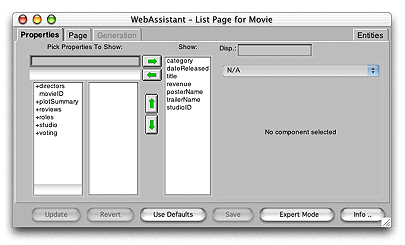
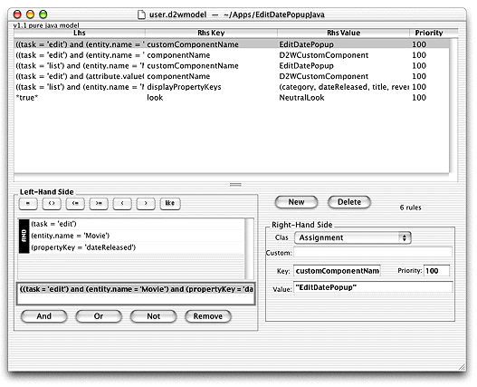

Developing
a Direct to Web Application
There are four steps to creating a Direct to Web application:
- Create a
Direct to Web project using Project Builder.
- Create a model using EOModeler.
- Customize your Direct to Web application
using the Direct to Web Assistant (optional).
- Further customize your Direct to Web application (optional).
Of the four steps, the last two are unique to Direct to Web
and are discussed in more detail below.
The
Direct to Web Assistant
The Direct to Web Assistant is a Java applet that runs at
the same time as your application. It communicates directly with
Direct to Web and allows you to reconfigure your application in
many ways. Figure 5-13 shows the Direct to Web Assistant in use.
Figure
5-13 The Direct to Web Assistant

With the assistant, you can designate which entities are read-write,
read-only, or hidden. You can also set appearance parameters for
most of the pages that Direct to Web generates. For example, you
can control whether or not the page displays with a banner. You
can also change the background color for the table the page displays,
if applicable. The assistant also permits you to configure the way
properties (attributes and relationships) appear on list, edit,
and inspect pages.
As mentioned earlier, the assistant defines a set of rules
that override the default Direct to Web rules. Thus, the assistant
is the preferred way to modify rules. However, sometimes you need
to change the default rules or override the default rules in ways
the assistant can't. You can use an application called the Rule
Editor to edit the rules directly. Figure 5-14 shows the Rule Editor.
Figure
5-14 The Rule Editor

Further
Customizing Your Direct to Web Application
If you need to customize your application beyond what you
can do with the Direct to Web Assistant, you can use these methods:
- Freeze
a page. When you want to change the appearance or function
of a single page in your Direct to Web application, you can freeze
the page with the Direct to Web Assistant. The page becomes a WebObjects
component in your project with a HTML template, a Java source file,
and a bindings file. You can edit it with WebObjects Builder just
as you would any other component. The downside is that you can't
customize frozen pages with the Direct to Web Assistant.
- Generate a Direct to Web template. Sometimes
you need to change the way every page for a particular task appears
in your application. For example, you might want to put an extra
hyperlink at the bottom of every list page. To do so, you instruct
the Direct to Web Assistant to generate a Direct to Web template,
modify the template, and tell the assistant to use your customized
template instead of the standard one. As mentioned earlier, a Direct
to Web template is an ordinary WebObjects component and can be edited
using WebObjects Builder. Unlike frozen pages, Direct to Web pages
based your custom template can be customized with the assistant.
- Modify the page wrapper and menu header. The
page wrapper component is included in your project and determines
the text and elements that are common to every page in your application
except the login page. It contains the menu header appropriate for
the look. Figure 5-8 shows the menu header for the Basic look. The menu
header is another component in your project.
- Mix WebObjects and Direct to Web pages.
You can navigate to a Direct to Web page from a WebObjects page
and vice versa. You can also embed certain Direct to Web functions
within a WebObjects page. These capabilities extend the flexibility
of Direct to Web considerably.
- Perform other customizations. You can
change almost anything in a Direct to Web application because it
is just a WebObjects application with some extra functionality. However,
you need to know the details of the Direct to Web architecture.
© 2001 Apple Computer, Inc.